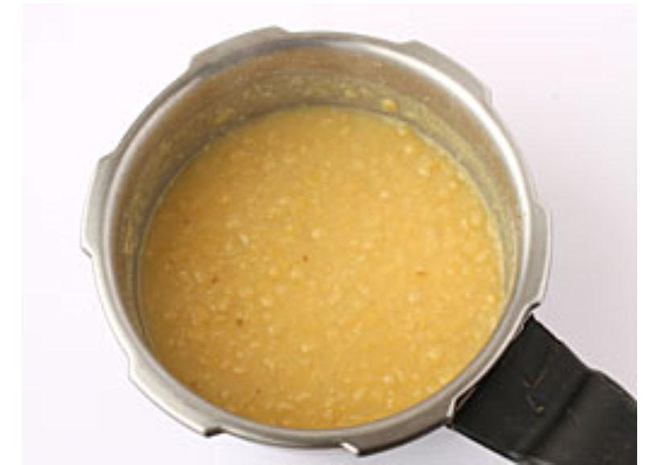
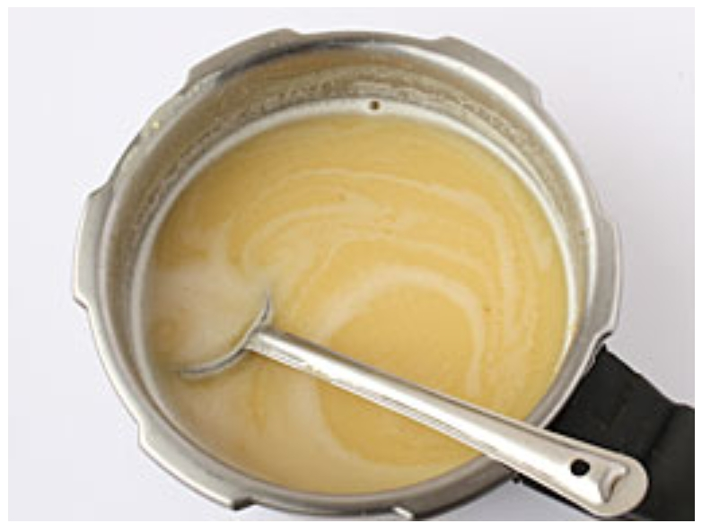
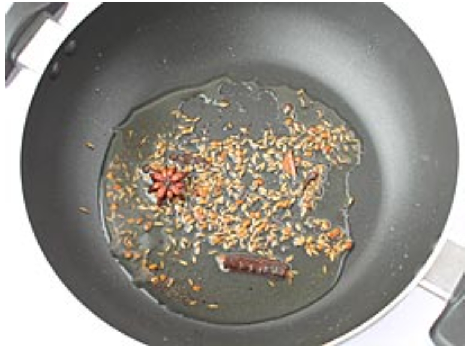
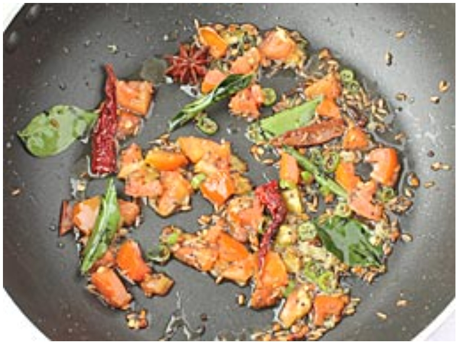
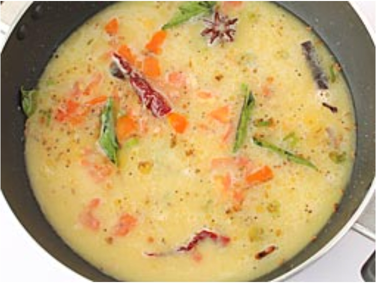
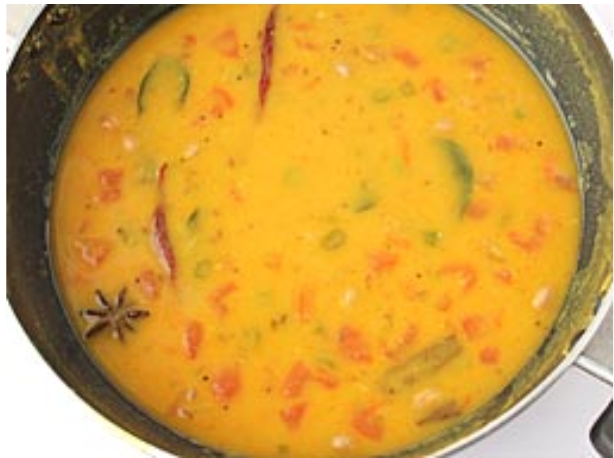

1. તુવેર દાળને ૨-૩ વાર ગરમ પાણીથી ધોઈ લો. તેમાથી વધારાનું પાણી કાઢી નાખોં અને તેને એક (૩ લીટરની ક્ષમતાવાળા) સ્ટીલ અથવા એલ્યુમિનિયમના પ્રેશર કૂકરમાં નાખોં.

2. તેમાં ૧ કપ પાણી અને મીઠું નાખોં અને મધ્યમ આંચ પર ૩-૪ સીટી થાય ત્યાં સુધી પકાવો (બાફો). (બાફયા પછી દાળ નરમ અને મુલાયમ થઈ જશે)

3. દાળને થોડી ઠંડી થવા દો. ત્યારબાદ તેને હેન્ડ બ્લેન્ડરથી મુલાયમ પ્યુરી થાય ત્યાં સુધી પીસી લો. તેમાં ૧ કપ પાણી નાખોં અને એકવાર વધારે પીસી લો.

4. એક પેન અથવા કડાઈમાં મધ્યમ આંચ પર તેલ ગરમ કરો. તેમાં મેથીના દાણા અને રાઈ નાખોં. જ્યારે રાઈ ફૂટવા લાગે, ત્યારે તેમાં લવિંગ, તજ, જીરું, બાદીયા અને ચપટી હીંગ નાખોં.

5. જ્યારે લવિંગ ફૂટવા લાગે, ત્યારે તેમાં સૂકું લાલ મરચું, છીણેલું આદું, સમારેલું લીલું મરચું, કાપેલું ટામેટું અને લીમડાના પાન નાખોં.

6. તેને થોડીવાર સાંતળો અને પછી તેમાં પીસેલી દાળ નાખોં.

7. તેમાં ખાંડ, લીંબુનો રસ, લાલ મરચું પાઉડર અને હળદર નાખોં, બરાબર મિક્ષ કરો અને ઉકળવા માટે મૂકો. જ્યારે તે ઉકળવા લાગે ત્યારબાદ તેને મધ્યમ આંચ પર ૬-૮ મિનિટ સુધી પકાવો.
8. ગેસને બંધ કરી દો અને તેને સર્વિંગ બાઉલમાં કાઢો. તેને સમારેલા લીલા ધાણાથી સજાવો અને ભાત અને પાપડની સાથે પીરસો.